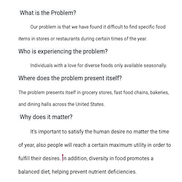

Problem Statement: Seasonal Food
Our problem is that we have found it difficult to find specific food items in stores or restaurants during certain times of the year. Our solution will provide users a guide to locating their favorite consumables no matter the season.
Affinity Diagram: Seasonal Food

Our affinity diagram is a way to display the ideas for our app that my group came up with together.
Personas: 5 Personas for Seasonal Food

We created five personas of people that would be likely to use our app to find their favorite seasonal foods.
Storyboards: 5 Stories for Seasonal Food App
We produced five stories of how our personas could have discovered and begin our using our app.
Sketches of Seasonal Food App Screens
We drew sketches of what our app could possibly look like and what the progression is through it.
Paper Prototype of Our App
Rough prototypes made of paper that show various screens of our app.
Hi-Fi Prototype of Our App
We used proto.io to create a high fidelity prototype which can be clicked through.